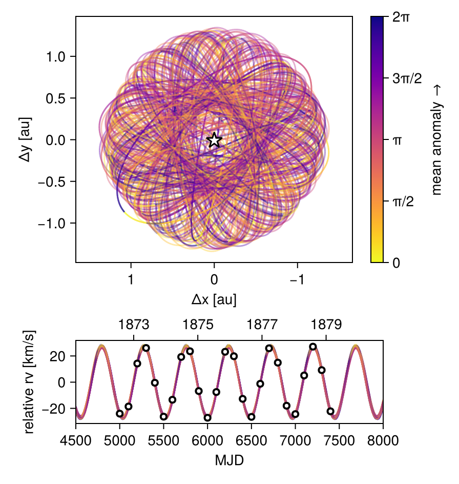

Fit Relative RV Data
Octofitter includes support for fitting relative radial velocity data. Currently this is only tested with a single companion. Please open an issue if you would like to fit multiple companions simultaneously.
The convention we adopt is that positive relative radial velocity is the velocity of the companion (exoplanets) minus the velocity of the host (star).
To fit relative RV data, start by creating a likelihood object:
using Octofitter
using OctofitterRadialVelocity
using CairoMakie
using Distributions
rel_rv_like = PlanetRelativeRVLikelihood(
(epoch=5000, rv=-24022.74287804528, σ_rv=1500.0),
(epoch=5100, rv=-18571.333891168735, σ_rv=1500.0),
(epoch=5200, rv= 14221.562142944855, σ_rv=1500.0),
(epoch=5300, rv= 26076.885281031347, σ_rv=1500.0),
(epoch=5400, rv= -459.2622916989299, σ_rv=1500.0),
(epoch=5500, rv=-26319.264894263993, σ_rv=1500.0),
(epoch=5600, rv=-13430.95547916007, σ_rv=1500.0),
(epoch=5700, rv= 19230.962951723584, σ_rv=1500.0),
(epoch=5800, rv= 23580.261108170227, σ_rv=1500.0),
(epoch=5900, rv= -6786.277919597756, σ_rv=1500.0),
(epoch=6000, rv=-27161.777481651112, σ_rv=1500.0),
(epoch=6100, rv= -7548.583094927461, σ_rv=1500.0),
(epoch=6200, rv= 23177.948014103342, σ_rv=1500.0),
(epoch=6300, rv= 19780.94394128632, σ_rv=1500.0),
(epoch=6400, rv=-12738.38520102873, σ_rv=1500.0),
(epoch=6500, rv=-26503.73597982596, σ_rv=1500.0),
(epoch=6600, rv= -1249.188767321913, σ_rv=1500.0),
(epoch=6700, rv= 25844.465894406647, σ_rv=1500.0),
(epoch=6800, rv= 14888.827293969505, σ_rv=1500.0),
(epoch=6900, rv=-17986.75959839915, σ_rv=1500.0),
(epoch=7000, rv=-24381.49393255423, σ_rv=1500.0),
(epoch=7100, rv= 5119.21707156116, σ_rv=1500.0),
(epoch=7200, rv= 27083.2046462065, σ_rv=1500.0),
(epoch=7300, rv= 9174.176455190982, σ_rv=1500.0),
(epoch=7400, rv=-22241.45434114139, σ_rv=1500.0),
)PlanetRelativeRVLikelihood Table with 4 columns and 25 rows:
inst_idx epoch rv σ_rv
┌──────────────────────────────────
1 │ 1 5000 -24022.7 1500.0
2 │ 1 5100 -18571.3 1500.0
3 │ 1 5200 14221.6 1500.0
4 │ 1 5300 26076.9 1500.0
5 │ 1 5400 -459.262 1500.0
6 │ 1 5500 -26319.3 1500.0
7 │ 1 5600 -13431.0 1500.0
8 │ 1 5700 19231.0 1500.0
9 │ 1 5800 23580.3 1500.0
10 │ 1 5900 -6786.28 1500.0
11 │ 1 6000 -27161.8 1500.0
12 │ 1 6100 -7548.58 1500.0
13 │ 1 6200 23177.9 1500.0
14 │ 1 6300 19780.9 1500.0
15 │ 1 6400 -12738.4 1500.0
16 │ 1 6500 -26503.7 1500.0
17 │ 1 6600 -1249.19 1500.0
⋮ │ ⋮ ⋮ ⋮ ⋮The columns in the table should be . See the standard radial velocity tutorial for examples on how this data can be loaded from a CSV file.
The relative RV likelihood does not incorporate an instrument-specific RV offset. A jitter parameter called jitter can still be specified in the @planet block, as can parameters for a gaussian process model of stellar noise. Currently only a single instrument jitter parameter is supported. If you need to model relative radial velocities from multiple instruments with different jitters, please open an issue on GitHub.
Next, create a planet and system model, attaching the relative rv likelihood to the planet. Make sure to add a jitter parameter (optionally jitter=0) to the planet.
@planet b KepOrbit begin
a ~ Uniform(0,10)
e ~ Uniform(0.0, 0.5)
i ~ Sine()
ω ~ UniformCircular()
Ω ~ UniformCircular()
τ ~ UniformCircular(1.0)
P = √(b.a^3/system.M)
tp = b.τ*b.P*365.25 + 6000 # reference epoch for τ. Choose an MJD date near your data.
jitter ~ LogUniform(0.1, 1000) # m/s
end rel_rv_like
@system ExampleSystem begin
M ~ truncated(Normal(1.2, 0.1), lower=0.1)
end b
model = Octofitter.LogDensityModel(ExampleSystem)LogDensityModel for System ExampleSystem of dimension 11 and 28 epochs with fields .ℓπcallback and .∇ℓπcallback
using Random
rng = Random.Xoshiro(123)
chain = octofit(rng, model)Chains MCMC chain (1000×29×1 Array{Float64, 3}):
Iterations = 1:1:1000
Number of chains = 1
Samples per chain = 1000
Wall duration = 2.89 seconds
Compute duration = 2.89 seconds
parameters = M, b_a, b_e, b_i, b_ωy, b_ωx, b_Ωy, b_Ωx, b_τy, b_τx, b_jitter, b_ω, b_Ω, b_τ, b_P, b_tp
internals = n_steps, is_accept, acceptance_rate, hamiltonian_energy, hamiltonian_energy_error, max_hamiltonian_energy_error, tree_depth, numerical_error, step_size, nom_step_size, is_adapt, loglike, logpost, tree_depth, numerical_error
Summary Statistics
parameters mean std mcse ess_bulk ess_tail rhat ⋯
Symbol Float64 Float64 Float64 Float64 Float64 Float64 ⋯
M 1.1803 0.0995 0.0037 740.2689 674.5299 1.0009 ⋯
b_a 1.2703 0.0356 0.0013 741.2195 636.1841 1.0015 ⋯
b_e 0.0122 0.0094 0.0004 291.9552 142.6740 0.9997 ⋯
b_i 1.5986 0.3193 0.0389 97.1122 627.9904 1.0289 ⋯
b_ωy 0.0077 0.7168 0.0484 229.9836 684.6559 1.0104 ⋯
b_ωx 0.0338 0.7068 0.0430 273.2590 563.7737 1.0035 ⋯
b_Ωy -0.0113 0.7127 0.0370 384.5727 762.6804 1.0028 ⋯
b_Ωx -0.0387 0.7196 0.0410 347.1992 673.4710 1.0009 ⋯
b_τy -0.0083 0.7099 0.0469 254.5592 752.4438 1.0054 ⋯
b_τx -0.0373 0.7086 0.0435 266.0745 451.1828 1.0062 ⋯
b_jitter 50.7694 104.5595 4.1055 629.5755 714.9738 1.0026 ⋯
b_ω 0.0783 1.7986 0.0954 428.9063 729.9509 1.0088 ⋯
b_Ω -0.1130 1.8258 0.0870 531.5712 570.2124 0.9993 ⋯
b_τ -0.0102 0.2910 0.0147 446.8107 495.1361 1.0065 ⋯
b_P 1.3193 0.0023 0.0001 1004.0761 672.1448 1.0003 ⋯
b_tp 5995.1057 140.2303 7.0826 446.8956 495.1361 1.0064 ⋯
1 column omitted
Quantiles
parameters 2.5% 25.0% 50.0% 75.0% 97.5%
Symbol Float64 Float64 Float64 Float64 Float64
M 0.9985 1.1126 1.1755 1.2425 1.3783
b_a 1.2026 1.2468 1.2691 1.2934 1.3406
b_e 0.0003 0.0047 0.0104 0.0179 0.0335
b_i 1.1227 1.2670 1.6832 1.9030 2.0204
b_ωy -1.0605 -0.6775 0.0027 0.7174 1.0723
b_ωx -1.0640 -0.6579 0.0747 0.7248 1.0389
b_Ωy -1.0733 -0.7295 -0.0068 0.7034 1.0644
b_Ωx -1.0702 -0.7317 -0.0964 0.6424 1.0723
b_τy -1.0748 -0.7059 0.0073 0.6750 1.0674
b_τx -1.0836 -0.7253 -0.0608 0.6479 1.0523
b_jitter 0.1349 0.8516 5.8835 44.3512 369.6879
b_ω -2.9965 -1.3992 0.1018 1.6856 2.8766
b_Ω -2.9953 -1.6895 -0.2247 1.4747 2.9711
b_τ -0.4811 -0.2479 -0.0378 0.2501 0.4787
b_P 1.3150 1.3178 1.3193 1.3208 1.3240
b_tp 5768.0868 5880.7741 5981.7474 6120.6053 6230.5071
octoplot(model, chain, ts=range(4500, 8000, length=200), show_physical_orbit=true)